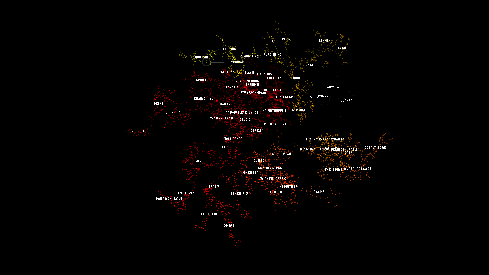

Public:Katia54 Known Space Completed
 Completed! 26.11.yc117 (Nov. 26th, 2015)
{kind=link}
Known Space Completed!!!
{kind=link}
“And when the day arrives I’ll become the sky and I’ll become the sea and the sea will come to kiss me for I am going home. Nothing can stop me now.” – Trent Reznor, Songwriter
26.11.yc117 (2015) D4KU-5 System < Taurus Constellation < Fountain Region
I’ve just finished exploring and taking images of every planet in every High, Low, and Null Sec system in K-Space (Known Space) in all of New Eden! That’s 5,201 systems in 64 regions. Over 45,000 images. WITHOUT LOSING A SINGLE SHIP!!!
Sorry, just a little excited there. I’m sure you understand.
When did it all begin? Let’s see…
{kind=link}
I started in my home system of Saisio in the Forge Region on 01.12.yc111 (December 1st, 2009). When I started out, my mind was set to explore every planet in every system in known space with the expectation there would be ship and pod losses along the way. Never once did I ponder the possibility I would make the journey loss free. At least not until I started around the north side of Null Sec and hadn’t lost a ship yet. Let me tell you, the pressure really started to weight me down as I got closer and closer to achieving not only the completion of K-Space but also finishing without losses. My paranoia ran high, my willingness to take chances became less and less, as that goal became a possibility.
I finished Empire space and started Null Sec in 07.yc116 (July 2014). That puts me having been in Null for a year and 4 months, only docking once during that time so I could join Signal Cartel. (In order to close my corp, I had to be in a station). I found a wormhole that lead me back to low sec, docked, then headed right back out again. That was 10 months ago and my longest stretch not docking during this expedition.
Real time it didn’t actually take me 6 years. I had two extended breaks in there. Actual time was about 3 years taking an average of about 10 minutes per system and about 6 systems per day. So, that’s probably between 850 and 900 hours. Add in time for image processing, uploading, blog entries, etc, total time was probably just over 1,200 hours invested in exploration of K-Space.
Let’s see how far I have to go to get back home via the safer routes… yes, I’ve done the dangerous paths long enough, time for some easy sailing, don’t you think? 42… 42? … The answer to life, the universe, and everything? … No words, just no words. Don’t question the universe! 🙂
{kind=link}
And now… I’m just thankful to be back home in Saisio. My hands are shaking, my knees are weak, and I feel like I’m going to throw-up. I think my pod goo needs a change.
So, if you think it’s impossible to explore New Eden without losing a ship… think again. With planning, persistence, and a lot of luck, it can be done.
PS: Once I get my space station legs back in my Captains Quarters, I’m going shopping! Thinking maybe a new outfit and a new pair of shoes. Time for a portrait change, don’t you think? Then after a break for the holidays, on to W-Space (Wormhole Space).
Fly Clever and Happy Holidays!
{kind=link}
Comments
"I too am from Saisio. Please allow me to be the first to congratulate you, and name you to your true calling: Stargazer.
Ad astra per aspera
Helena" - Helena Khan
"Stargazer is a perfect name for this explorer." - Eurick Dranol
"Out of sheer interest, what was your background when Katia was created? Because the Achura do have one that is Stargazer.
And I cannot think of a more fitting thing" 🙂 - Helena Khan
"Indeed, I’m a descendant of the Stargazers. 🙂 You can read more about my background and motivations from my bio." - Katia Sae
"What ship and fittings did you use?" - Alvin
"For Null Sec I was flying Jester’s Trek, my Tengu, from Jester's Trek" - Katia Sae
"Thats built out of pure awesomium and very VERY cool 🙂" - Helena Khan
"An incredible feat. I stand in awe." - Louis DeGuerre
"I am totally impressed. Such dedication is unbelievable. Congratulations! o7
And what’s next? PHotos of all the moons?" 😀 - Sol Arisa Ke'aide
"Awesome job !!! Can’t wait to see all the pictures 😀 #cantstopthesignal <3" - Kobura
"You, little Miss Sae are awesome! Congratulations to this outstanding success! o7" - Leon Davenport
"This is so cool man! What are you going to do now?" 🙂 - Alvaro Navidson
"Thanks! Wormhole space is next on the agenda." 🙂 - Katia Sae
"Congrats! Making it to all of the systems is an act of stamina and determination, with no small amount of daring given the destinations in low and null. Doing all of this without a ship loss is truly the cherry on top.
Can you say more about the Known-Space Outside and S-Space stats in your top sidebar? I assume one of them is the unconnected Jove space systems." - Jakob Anedalle
"Thanks! And yes, you are correct. The 230 systems listed as K-Space Outside is the unreachable Jove and Dev Regions." - Katia Sae
"Well done captain, Nasa would like to know if you found any alien life on these planets?" - Arthur
"What an amazing and incredible achievement . Absolutely awesome. Well done and congratulations." - Luobote Kong
"As the CEO for Starstuff Industrials, I approve of your corporation’s name." - Studio Ghibli
"Very proud of you, Katia! What an amazing accomplishment and testament to the sandbox style of gameplay, really! We must have a space celebration with Hugs(tm) before you go off into W-Space for another two years" 😛 - Mynxee
"CCP needs to make a monument for this, if this is the first time it’s ever been done.
Congratz on this awesome accomplishment!" - Staxed
"Amazing! I thought of doing something like this long ago when EVE was a mere baby, but even back then I thought it was just too impossible of an undertaking. You’ve proven me wrong. Congrats on the awesome journey, the wonderfully OCD organization, and the beautiful pic as well!" - Rusalka
"#Cantstopthesignal Katia Sae. well done" 🙂 - Daneo Mistry
"Congrats! Now when you saw the world, retire and get hooked on drugs!" - Sohl Ni-Zha
"Wow, talk about a feat. I considered doing that but never started on it. Excellent job! You are the only person that can say they did that. Good luck in W/H. Navigating that is going to me a challenge." - Dave
"Perhaps CCP will design a new exploration ship named after you. Either as a mainstream exploration ship or a rare ship for your self. This event deserves some form of official recognition. Hoping from system to system is easy enough but to do it without a loss is pure remarkable." - Dave
"Great work! I remember you passing through out old home like year ago, and seeing these old photos of the JQA8-6 Constellation brings back a lot of memories.
Thank you! and ps. we almost got you down there" 😉 - YoyBoy
"I haven’t played in a while but I have to pop back in to say this. Congratulations. That is an awesome feat. I know." - Jeran Tek
"I know what you went through. I remember the feeling as the end drew near for me. Just reading your account brought back some of those feelings.
I love that there have been a few to follow in my footsteps over the years and now someone has surpassed me. I feel proud in a “kids grow up so fast” sort of way. What you did was very cool. Congratulations." - Jeran Tek
"I’m humbled you’ve stopped by and taken time to comment and congratulate more than once now! And I’m also very proud to have followed in your footsteps. It’s trail blazers like yourself that inspire others to reach further and go beyond to inspire the next generation to do even better. Thanks so much for your thoughts and I’m glad to have ignited those feelings once again, both good and bad, I know." 🙂 - Katia Sae
"I don’t think such an achievement has ever been officially recorded like this, let alone boasted for.
Congratulations Katia, they should name a recon vessel after you" 🙂 - Conner
"Out of interest, how many times did you get “caught” in that fit? I.e., uncloaked, targeted, pointed, even shot at a bit while still making your escape?" - Gunlok Thren
"A hand full of times in Null Sec. I had several really close calls where I was uncloaked and targeted. I do have perfect navigation skills which saved me more than once by escaping before shots got off most of the time. So, the times I actually got shot at were very few. Honestly, I found Null Sec gate camps to be a bit over confident. Where as Low Sec camps tended to be more difficult. I usually ended up having the element of surprise on them." - Katia Sae
"Congratulations!!!!! I really enjoyed watching your progress through K-Space. I wish you luck for your journey to W-Space!" - Samus Musashi
"Katia,
Awesome dedication and patience. I, too, believe CCP should formally recognize this achievement somehow. Given that span of time, I would assume your SP points are fairly healthy. Congratulations, and fly safe…….
v/r, NQ" - NQBUS Shouna
"Now take images of every planet in every system in Elite Dangerous…" - Pleco
"It’s a trap! There are 4 billion (or was that 400 billion? I can’t remember) star systems in Elite." - Jeran Tek
"Katia Sae,
I stand in awe of your remarkable achievement. “Well done” seems such an understatement. I agree, CCP should mark your accomplishment, and a rare recon ship sounds ideal.
Bravo, and we look forward to your continuing adventures in WH." - Fenris En Daire